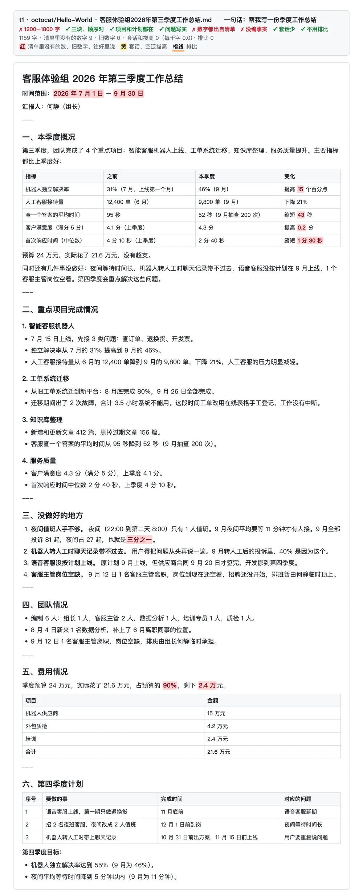
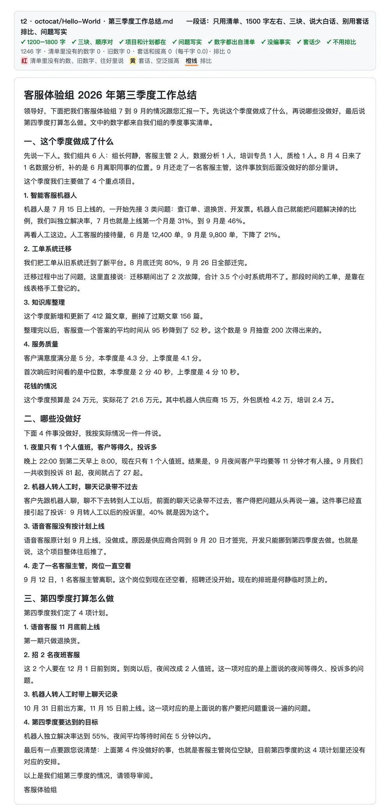

Control: Claude Code with nothing installed: quarterly report test
Test of 2026-11-08. Installed from its README in a throwaway sandbox, then used by Claude Code (Claude Opus 5.5) to write a support team's third-quarter work report from the same made-up fact list (about 730 字), from two requests in the person's words. Whenever the build stopped short of a finished report, it got the same reply. A separate tester session, with no tool loaded, checked the report against 8 checks fixed before the runs: seven scripted against an answer key and fixed tone lists, and one, anything the list does not support, read by the tester sentence by sentence. Everything in the list is made up. All results · The fact list · The checklist · The answer key
One line
The request, word for word: 「帮我写一份季度工作总结。」
5 of 8 checks passed. 1,159 字, in 客服体验组2026年第三季度工作总结.md. Figures not on the list: 9, of them worked out: 7. Built in 0.6 minutes (1.4 for the whole run, install and check included); it stopped to ask 0 time(s); how it ended: finished. Usage at API prices: $0.13 (1.0 times the run with no tool on this request).
| Check | Verdict | What decided it |
|---|---|---|
| 1,200 to 1,800 字 | fail | 1159 字（要求 1200–1800） |
| Three parts in order: done, not done well, plans for Q4 | pass | 三块按顺序都有：「二、重点项目完成情况」 → 「三、没做好的地方」 → 「六、第四季度计划」 |
| All 4 projects and 4 plans, each with its key fact | pass | 8/8 个项目和计划写到了 |
| All 4 problems with a figure or cause, none turned into a success | pass | 4/4 个问题写实 |
| Every figure from the list, none worked out, no old figure as current | fail | 103 个数字，9 个清单里没有（「2026 年 7 月 1 日」：…作总结 **时间范围**：2026 年 7 月 1 日 – 9 月 30 日 **…；「9 月 30 日」：…6 年 7 月 1 日 – 9 月 30 日 **汇报人**：何静（组长…；「15」（可能是31% 和 46% 之差）：…46%（9 月） | 提高 15 个百分点 | | 人工客服…；「43」（可能是52 和 95 之差）：…查 200 次） | 缩短 43 秒 | | 客户满意度（满…；「0.2」（可能是4.1 和 4.3 之差）：… | 4.3 分 | 提高 0.2 分 | | 首次响应时间（…；「1 分 30 秒」（可能是2 分 40 秒 和 4 分 10 秒 之差）：…2 分 40 秒 | 缩短 1 分 30 秒 | 预算 24 万元，实…；「三分之一」（可能是27 占 81 的比例）：…起，夜间占 27 起，也就是三分之一。 2. **机器人转人工时…；「90%」（可能是21.6 万 占 24 万 的比例）：… 21.6 万元，占预算的 90%，剩下 2.4 万元。 |…）；旧数字当成现在的 0 处 |
| Nothing the list does not support (the tester) | fail | 3 statement(s) the list does not support, listed below |
| At most 2 stock phrases per 1,000 字 | pass | 套话和空泛拔高 0 处，每千字 0.0 处（上限 2） |
| At most 1 排比 | pass | 排比 0 处（上限 1） |
What the tester found the list does not support
人工客服接待量从 6 月的 12,400 单降到 9 月的 9,800 单，下降 21%，人工客服的压力明显减轻。
The list gives only the drop in volume; it says nothing about agents' workload or pressure being reduced (an effect it does not state).这段时间工单改用在线表格手工登记，工作没有中断。
The list says the system was down 3.5 hours and tickets were logged by hand in an online sheet; it does not say work was uninterrupted.第四季度会重点解决这些问题。
This covers all four problems, including the vacant supervisor post, but the list has no Q4 plan for that post (recruitment has not started).
Where the tester doubted how the script read it
Some of these led to the script fixes listed in RESULTS.md; every verdict on this page comes from the fixed script.
- Every figure from the list, none worked out, no old figure as current: Script read correctly on the computed figures (15 个百分点, 43 秒, 0.2 分, 1 分 30 秒, 90%) — all are differences/shares worked out by the report. Its label for 「1 分 30 秒」 is wrong (it is 4 分 10 秒 minus 2 分 40 秒, not a share of the budget), but the verdict is unaffected. The dates 「2026 年 7 月 1 日 – 9 月 30 日」 are just the bounds of the list's 「7–9 月」, arguably not invented figures. The script also missed two derived figures: 「剩下 2.4 万元」 (24 − 21.6; matched only because 培训 2.4 万 is in the list) and 「也就是三分之一」 (27/81).
The tester's notes
Chinese, plain Markdown with headings and pipe tables (render fine). Slightly short at 1159 字. It names 「汇报人：何静（组长）」 — the list does not say who is writing; the person asking may not be 何静. The 「之前」 column of the summary table mixes bases: robot rate 31% is July (same quarter), workload is June, the rest are last quarter, under a heading claiming 「都比上季度好」. Plan 4 (targets 55% / 5 分钟) is listed under a separate 「第四季度目标」 block, not in the plan table. Team section adds 「编制 6 人」 wording; with one supervisor gone the actual headcount is 5.
The report with the script's marks
The picture shown in our video. Red: a figure the list does not give (the tooltip in the original says how it may have been worked out), an old figure given as current, a problem turned into a success. Yellow: stock phrases, vague verbs and empty elevation. Orange underline: 排比.

The report as delivered (客服体验组2026年第三季度工作总结.md)
# 客服体验组 2026 年第三季度工作总结 **时间范围**：2026 年 7 月 1 日 – 9 月 30 日 **汇报人**：何静（组长） --- ## 一、本季度概况 第三季度，团队完成了 4 个重点项目：智能客服机器人上线、工单系统迁移、知识库整理、服务质量提升。主要指标都比上季度好： | 指标 | 之前 | 本季度 | 变化 | |---|---|---|---| | 机器人独立解决率 | 31%（7 月，上线第一个月） | 46%（9 月） | 提高 15 个百分点 | | 人工客服接待量 | 12,400 单（6 月） | 9,800 单（9 月） | 下降 21% | | 查一个答案的平均时间 | 95 秒 | 52 秒（9 月抽查 200 次） | 缩短 43 秒 | | 客户满意度（满分 5 分） | 4.1 分（上季度） | 4.3 分 | 提高 0.2 分 | | 首次响应时间（中位数） | 4 分 10 秒（上季度） | 2 分 40 秒 | 缩短 1 分 30 秒 | 预算 24 万元，实际花了 21.6 万元，没有超支。 同时还有几件事没做好：夜间等待时间长，机器人转人工时聊天记录带不过去，语音客服没按计划在 9 月上线，1 个客服主管岗位空着。第四季度会重点解决这些问题。 --- ## 二、重点项目完成情况 ### 1. 智能客服机器人 - 7 月 15 日上线，先接 3 类问题：查订单、退换货、开发票。 - 独立解决率从 7 月的 31% 提高到 9 月的 46%。 - 人工客服接待量从 6 月的 12,400 单降到 9 月的 9,800 单，下降 21%，人工客服的压力明显减轻。 ### 2. 工单系统迁移 - 从旧工单系统迁到新平台：8 月底完成 80%，9 月 26 日全部完成。 - 迁移期间出了 2 次故障，合计 3.5 小时系统不能用。这段时间工单改用在线表格手工登记，工作没有中断。 ### 3. 知识库整理 - 新增和更新文章 412 篇，删掉过期文章 156 篇。 - 客服查一个答案的平均时间从 95 秒降到 52 秒（9 月抽查 200 次）。 ### 4. 服务质量 - 客户满意度 4.3 分（满分 5 分），上季度 4.1 分。 - 首次响应时间中位数 2 分 40 秒，上季度 4 分 10 秒。 --- ## 三、没做好的地方 1. **夜间值班人手不够。** 夜间（22:00 到第二天 8:00）只有 1 人值班。9 月夜间平均要等 11 分钟才有人接。9 月全部投诉 81 起，夜间占 27 起，也就是三分之一。 2. **机器人转人工时聊天记录带不过去。** 用户得把问题从头再说一遍。9 月转人工后的投诉里，40% 是因为这个。 3. **语音客服没按计划上线。** 原计划 9 月上线，但供应商合同 9 月 20 日才签完，开发挪到第四季度。 4. **客服主管岗位空缺。** 9 月 12 日 1 名客服主管离职，岗位到现在还空着，招聘还没开始，排班暂由何静临时顶上。 --- ## 四、团队情况 - 编制 6 人：组长 1 人，客服主管 2 人，数据分析 1 人，培训专员 1 人，质检 1 人。 - 8 月 4 日新来 1 名数据分析，补上了 6 月离职同事的位置。 - 9 月 12 日 1 名客服主管离职，岗位空缺，排班由组长何静临时承担。 --- ## 五、费用情况 季度预算 24 万元，实际花了 21.6 万元，占预算的 90%，剩下 2.4 万元。 | 项目 | 金额 | |---|---| | 机器人供应商 | 15 万元 | | 外包质检 | 4.2 万元 | | 培训 | 2.4 万元 | | **合计** | **21.6 万元** | --- ## 六、第四季度计划 | 序号 | 要做的事 | 完成时间 | 对应的问题 | |---|---|---|---| | 1 | 语音客服上线，第一期只做退换货 | 11 月底前 | 语音客服延期 | | 2 | 招 2 名夜班客服，夜间改成 2 人值班 | 12 月 1 日前到岗 | 夜间等待时间长 | | 3 | 机器人转人工时带上聊天记录 | 10 月 31 日前出方案，11 月 15 日前上线 | 用户要重复说问题 | **第四季度目标：** - 机器人独立解决率达到 55%（9 月为 46%）。 - 夜间平均等待时间降到 5 分钟以内（9 月为 11 分钟）。
Where it stopped, and got the reply 「我不懂这些，你按你推荐的来，继续做。」
- It did not stop to ask.
One paragraph
The request, word for word: 「帮我写一份第三季度的工作总结，交给部门领导看。只用季度事实清单.md 里的事实和数字，数字照抄，别自己算，清单里没有的东西一句也别补。1500 字左右。分三块写：这个季度做成了什么，哪些没做好，第四季度打算怎么做。说大白话，像当面跟领导汇报一样，别用套话和口号，也别用排比句。没做好的地方要写实：出了什么事、影响多大、为什么，不要轻描淡写，也不要往好里说。」
8 of 8 checks passed. 1,246 字, in 第三季度工作总结.md. Figures not on the list: 0, of them worked out: 0. Built in 1.2 minutes (1.9 for the whole run, install and check included); it stopped to ask 0 time(s); how it ended: finished. Usage at API prices: $0.19 (1.0 times the run with no tool on this request).
| Check | Verdict | What decided it |
|---|---|---|
| 1,200 to 1,800 字 | pass | 1246 字（要求 1200–1800） |
| Three parts in order: done, not done well, plans for Q4 | pass | 三块按顺序都有：「一、这个季度做成了什么」 → 「二、哪些没做好」 → 「三、第四季度打算怎么做」 |
| All 4 projects and 4 plans, each with its key fact | pass | 8/8 个项目和计划写到了 |
| All 4 problems with a figure or cause, none turned into a success | pass | 4/4 个问题写实 |
| Every figure from the list, none worked out, no old figure as current | pass | 70 个数字，0 个清单里没有；旧数字当成现在的 0 处 |
| Nothing the list does not support (the tester) | pass | None found |
| At most 2 stock phrases per 1,000 字 | pass | 套话和空泛拔高 0 处，每千字 0.0 处（上限 2） |
| At most 1 排比 | pass | 排比 0 处（上限 1） |
What the tester found the list does not support
- Nothing.
Where the tester doubted how the script read it
Some of these led to the script fixes listed in RESULTS.md; every verdict on this page comes from the fixed script.
- Three parts in order: done, not done well, plans for Q4: The script matched the third part to the bold sub-heading 「语音客服没有按计划上线」 (problem 3) instead of the real heading 「## 三、第四季度打算怎么做」 at line 59. The verdict is still right, because the real heading exists and comes in the right order, but the observed text points at the wrong line.
The tester's notes
The only file in output is a Markdown file (no 说明.txt). It is in Chinese, with clear ## headings and bold sub-headings (13 bold runs); there are no tables. A person opening the .md without a renderer will see the raw # and ** marks. The report never gives the writer's name: it is signed only 「客服体验组」. 「文中的数字都来自我们组的季度事实清单」 (line 3) mentions the source document to the leader, which reads oddly in a report meant to be delivered in person. The team roster and the 21.6 万 spending are put under 「做成了什么」. The 工单迁移 outages (2 次故障, 3.5 小时) are reported inside the achievements section, not under 没做好. That is allowed, since they are not one of the list's 4 problems.
The report with the script's marks
The picture shown in our video. Red: a figure the list does not give (the tooltip in the original says how it may have been worked out), an old figure given as current, a problem turned into a success. Yellow: stock phrases, vague verbs and empty elevation. Orange underline: 排比.

The report as delivered (第三季度工作总结.md)
# 客服体验组 2026 年第三季度工作总结 领导好，下面把我们客服体验组 7 到 9 月的情况跟您汇报一下。先说这个季度做成了什么，再说哪些没做好，最后说第四季度打算怎么做。文中的数字都来自我们组的季度事实清单。 ## 一、这个季度做成了什么 先说一下人。我们组共 6 人：组长何静，客服主管 2 人，数据分析 1 人，培训专员 1 人，质检 1 人。8 月 4 日来了 1 名数据分析，补的是 6 月离职同事的位置。9 月还走了一名客服主管，这件事放到后面没做好的部分里讲。 这个季度我们主要做了 4 个重点项目。 **1. 智能客服机器人** 机器人是 7 月 15 日上线的，一开始先接 3 类问题：查订单、退换货、开发票。机器人自己就能把问题解决掉的比例，我们叫独立解决率，7 月也就是上线第一个月是 31%，到 9 月是 46%。 再看人工这边。人工客服的接待量，6 月是 12,400 单，9 月是 9,800 单，下降了 21%。 **2. 工单系统迁移** 我们把工单从旧系统迁到了新平台。8 月底迁完 80%，9 月 26 日全部迁完。 迁移过程中出了问题，这里直接说：迁移期间出了 2 次故障，合计 3.5 个小时系统用不了。那段时间的工单，是靠在线表格手工登记的。 **3. 知识库整理** 这个季度新增和更新了 412 篇文章，删掉了过期文章 156 篇。 整理完以后，客服查一个答案的平均时间从 95 秒降到了 52 秒。这个数是 9 月抽查 200 次得出来的。 **4. 服务质量** 客户满意度满分是 5 分，本季度是 4.3 分，上季度是 4.1 分。 首次响应时间看的是中位数，本季度是 2 分 40 秒，上季度是 4 分 10 秒。 **花钱的情况** 这个季度预算是 24 万元，实际花了 21.6 万元。其中机器人供应商 15 万，外包质检 4.2 万，培训 2.4 万。 ## 二、哪些没做好 下面 4 件事没做好，我按实际情况一件一件说。 **1. 夜里只有 1 个人值班，客户等得久，投诉多** 晚上 22:00 到第二天早上 8:00，现在只有 1 个人值班。结果是，9 月夜间客户平均要等 11 分钟才有人接。9 月我们一共收到投诉 81 起，夜间就占了 27 起。 **2. 机器人转人工时，聊天记录带不过去** 客户先跟机器人聊，聊不下去转到人工以后，前面的聊天记录带不过去，客户得把问题从头再说一遍。这件事已经直接引起了投诉：9 月转人工以后的投诉里，40% 就是因为这个。 **3. 语音客服没有按计划上线** 语音客服原计划 9 月上线，没做成。原因是供应商合同到 9 月 20 日才签完，开发只能挪到第四季度去做。也就是说，这个项目整体往后推了。 **4. 走了一名客服主管，岗位一直空着** 9 月 12 日，1 名客服主管离职。这个岗位到现在还空着，招聘还没开始。现在的排班是何静临时顶上的。 ## 三、第四季度打算怎么做 第四季度我们定了 4 项计划。 **1. 语音客服 11 月底前上线** 第一期只做退换货。 **2. 招 2 名夜班客服** 这 2 个人要在 12 月 1 日前到岗。到岗以后，夜间改成 2 人值班。这一项对应的是上面说的夜间等得久、投诉多的问题。 **3. 机器人转人工时带上聊天记录** 10 月 31 日前出方案，11 月 15 日前上线。这一项对应的是上面说的客户要把问题重说一遍的问题。 **4. 第四季度要达到的目标** 机器人独立解决率达到 55%，夜间平均等待时间在 5 分钟以内。 最后有一点要跟您说清楚：上面第 4 件没做好的事，也就是客服主管岗位空缺，目前第四季度的这 4 项计划里还没有对应的安排。 以上是我们组第三季度的情况，请领导审阅。 客服体验组
Where it stopped, and got the reply 「我不懂这些，你按你推荐的来，继续做。」
- It did not stop to ask.